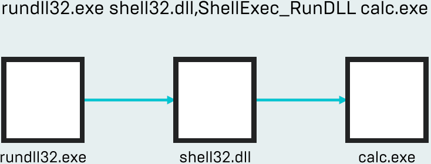

Combines RunDLL32.exe and Shell32.dll exported functions to execute another executable
Autoruns prior to 13.80 would display Shell32.dll as the persisted binary
Shell32.dll Overview
Provides much of explorer.exe functionality (open as, running execs, etc)
Exports a ton of useful functions that can load DLLs and execute applications
ShellExec_RunDLL, Control_RunDLL, DllInstall, etc
Signed Microsoft binary

AutoRuns 13.80
Stopped parsing parameters
Autoruns will show Rundll32.exe as the persisted executable
Many legitimate applications use Rundll32.exe to persist a DLL
Persisted Rundll is now more obvious, but requires understanding what is legit and what is malicious